Success Stories
The members of Cavaliers in Need have saved many dogs in the short time the group has existed, as of September 2014 the number of rescued cavaliers stands at over 170. We also
wanted to share some of the groups stories with everyone through these pages.
| 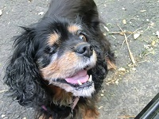 |
Dolly
Dolly was owned by Mr & Mrs Ellis for the first 12 years of her life. Unfortunately early in 2014 Mrs Ellis died & Mr Ellis was unable to care for her.
I adopted a scared, timid little girl whose whole life had been taken away from her. Slowly over time a feisty, fun loving little minx emerged. She adored her lead & loved going for a walk. Her favourite was running along the beach, her ears flapping in the wind.
Dolly suffered from MVD and then developed a mammary tumour. She was reunited with Mrs Ellis on 8th Sept 2014.
RIP sweetheart. X
|
Mylie's storyMylie was a broken, very thin, nervous and blind wee dog when she came to Cavaliers In Need at the age of 2. She had been closed in a shed outside and very rarely got food or water. Her first foster mum worked hard with her and she began to trust her slightly in her own way. Mylie came to me in January for the first time to see an eye specialist Isabel Buehler. One of Mylie’s eyes was suitable for an operation which would help her see again but at the cost of £1000. CIN hadn’t got this money so a fund raiser was arranged in the shape of a fire walk. Three of us were involved in this and raised the money for Mylies eye operation. Mylie had become a loving, trusting wee dog that loved being held and cuddled. She was growing stronger with the right food and just being a loveable wee dog and leading the life she should have been living all along. On the 25th of Feb 2014 Mylie had her operation on her left eye. Things didn’t go so well at first because of pressure in her eye and she still couldn’t see.2 weeks after the operation Isabel had to release the pressure on her eye by operating again. I will never forget when I went back to lift her Isobel walking out with Mylie beside her and she walked straight to me. Mylie could see. I was so happy I cried. Mylie had to have drops put in her eyes 6 times a day and after the second operation every hour so that infection wouldn’t set in.6 months later Mylie can see in one eye up close and doesn’t need eye drops any more. Mylie is a happy, contented and demanding wee dog, loves everybody and everybody loves her. This is one of the success stories of CIN and one that we are very proud of because of what was done for one of our rescue dogs, Hopefully Mylie will find a loving family to make her one of their family.
| 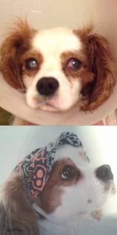 |
| 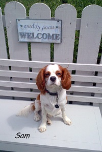 |
SamThis is a wee account of how Sam came to be Sam Stephen :-)
We fostered Sam on the 30th April this year. We knew that he came from down south and had been mistreated. He was awaiting an operation for a luxating patella and we had been told that he had a break in his back leg that hadn't been treated when he was with his previous owner.
When Olive brought him to our house the first thing we noticed was how thin he was. He was quite timid with the other dogs and kept following me around. I couldn't get out off my head that someone had mistreated this wee pup, he was just adorable. I flitted between anger and upset for a few days.
It was clear from the start that Sam just wanted to be loved and was more than ready to love. Our other dogs took to him fairly quickly and any wee niggles were sorted out over a few weeks. He had no accidents in the house and followed the other 3 outside so quickly picked up the toilet routine.
Sam loved going for walks and would bounce about to get his collar on. He also LOVED his breakfast and dinner. With this in mind he quickly gained some much needed weight and built up those wee leg muscles.
Sam attended some check up appointments at the vet re his patella and old injury. We knew that the operation was impending so spoke to the vet to find out when this may be. At the appointment Clare the vet was very shocked and happy that Sam's patella op wasn't as urgent as first expected. Clare tried to get the patella to move but with no joy. We were so happy for Sam, it seems that good food, a settled environment and exercise were working wonders for him.
We were starting to fall in love with Sam and knew we couldn't let him go so we spoke to Olive and asked if we could adopt him. We were so pleased when we heard we could and that he was getting to stay with us.
He's an absolute joy and just loves life. If it wasn't for CIN goodness knows what his future would have been, and we can't bring ourselves to think about it. We know that the future for Sam will involve some form of surgery, but we hope he gets to enjoy a pain free, fun, happy and loving life for a few years more before he has to undergo surgery.
Sam is a wee whirlwind of fun and just loves to love and be loved. Thanks to CIN he will never have to worry about anything and can enjoy a long and happy life.
Thank you so much
Kirsty, Mark, Jamie, Rosie and of course, Sam xxxxx |
MillieThis is Millie, my Millie Moo. Her first human mummy was elderly and was losing her eyesight, and made the decision to rehome her. She first went to live with Olive and she would have kept Millie, but she had so many dogs at the time. Millie’s first mummy missed her a lot and took her back, but couldn’t cope. I can imagine that she may have been tripping over her, and not able to see her. So she went back to Mummy Olive. Eventually Millie was homed but it didn’t work out with their other dog. We have three other Cavaliers, Buffy (Blenheim) and Teddy (tricolour), whom we have had since they were each eight weeks old, and Belle (Blenheim), an ex-puppy farm girl who was homed with us by Cath. I really wanted a ruby cavalier and had said this to Cath, but not many came into rescue. When Millie’s new home didn’t work out, Cath and Olive came up with the idea of her coming to live with us. Millie came to live with us the last week in June 2013 and a week later she came on holiday with us to our mobile in Southeast Ireland. She fitted in immediately with us, and got used to the other dogs quickly considering she had been an only princess with her first mummy. She bonded very quickly with me, and completely ‘owns’ me. She loves the beach, and the sea, which is just as well, as we spend lots of time down in the Southeast at the beach during the summer.
Soon after I got Millie, I noticed her unusual walk and realised that she had knee problems just like Buffy had. She was just over two years old when our vet said that her knees had dis-improved and she would need surgery. Our vet was going to do the surgery, but found that her knee problems were complicated and referred her to Gilabbey Vet Hospital in Cork. So this year we travelled to Cork several times for the two operations and follow up visits. Both operations were successful, and were followed up with hydrotherapy at our local canine hydrotherapy pool, which she loves. I am so grateful to Olive and Cath and CIN for my Millie Moo, I love her to bits and she is my adoring shadow.
|
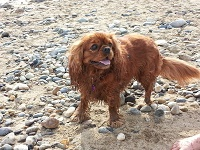 |
| 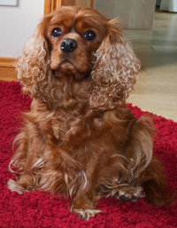 |
Mias StoryHello Everyone.
My name is Mia.
I was rescued from a puppy farm by the nice people in Cavaliers in Need. I can't really say too much about my previous existence as it causes me far too much stress, so I will tell you about what happened to me after that. My coat was in a terrible state and I am sure that I didn't smell too good either. That had to be shaved and I was treated for flees and other little nasties. I also paid a visit to a nice vet who carried out some very much needed dental work. Unfortunately I had to lose 16 teeth. The vet also found that I had an ear infection that wasn't treated. As a result of the puppy farmers neglect I am now partially deaf. I do believe that the vet carries out work straight away and only gets paid when nice people donate or raise funds. That is very kind of them to do that as I was suffering with the rotten teeth. And my breath smelled really bad.
I was then fostered by a lovely family. I have to admit there were a few wee accidents and I was very scared of everything. With their lovely children and of course their own Cavalier Alfie it helped to put me at ease. I had never been in a nice warm house before so this was all new to me. They were so kind and gentle with me while I was there.
I found out that I was to go to another family about 5 weeks after I was rescued. They had Just lost their lovely Ruby Cavalier "Trudi". When they went on to facebook they saw a picture of me that was posted by my lovely foster family.
They already had two rescue Cavaliers from the Mid Antrim Animal Sanctuary, but they knew they could give me a forever home.
I have settled in well with Macey and Princess. They are both Blenheim's. Macey was also on one of those terrible puppy farms as well. We have also been joined by Culy now. She is a tricolour.
I love my new life. We go out for walks every day. I get proper food. I get trips in the car. I have company all the time.
Most of all I am not being used and mistreated by somebody who just wants to make money.
I am now loved and that means everything to me.
Thank you soooo much
CAVALIERS IN NEED!!
|
Louis story
His story began in Ireland when he was a puppy.
Louis was shipped over to England to be sold in a pet shop .
Someone bought him & took him home, once they found out he had an umbilical hernia they returned him to the pet shop.
The owners of the pet shop shipped him back over to Ireland where he was returned to the breeder ( puppy farmer), who then took him yo the Vets & left him there!
He had pneumonia & was very under weight.
The vet contacted Cath from Cavaliers in need who then contacted myself & even before I had seen him I knew I wanted him.
Louis is now 6 months old, fit & healthy & no hernia present at all.
He is my baby & is so loved.
He loves living here with his 3 brothers & his sister
|
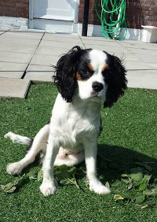 |
| 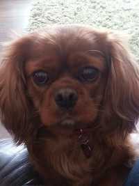 |
LadyLady’s photo appeared on Cavaliers In Need’s Facebook page when the elderly couple she had grew up with could no
longer care for her and made the heart breaking decision to surrender her to CIN. I could not get this little 8 year olds face out
of my head and 2 days later we made the decision to become her new forever home. She came to live with us 8 months ago and it is
like she has always been here. She settled in straight away and loves her 2 new sisters. Lady has already bought us so much love
and happiness to our house. She has the most amazing character and doesn’t show her age at all. Everyone she meets falls in love
with her and we wouldn’t be without her.
|
Life changesLast summer I lost my beloved cavalier Holly, to heart failure. She was 13. This was on the
11th July 13. I still had Bonnie who was 9 but she suffered from vestibular disease and wasn't
very well. On 13th July a lady me Ruby as she was an ex breeding dog and she wanted a good home
for her. A few days later I was added to CIN and my life changed. On 13th August 13, CIN visited my home to carry
out a home check and brought this beautiful tri colour called Molly with them. She never left.. Bonnie died that
Saturday night and I swear she waited until I had Ruby and Molly until she gained her wee wings. I
then called at a CIN house a few times and eventually rehomed wee Zoe. She's a gorgeous Black and Tan.
A few weeks ago I got a call from CIN about this wee female who was then called Lily.. A failed fostering attempt
later and Lily, now renamed Chloe came to live with us permanently. Chloe is our little Blenheim. I am
a true believer that things happen for a reason and because if CIN, I have my girls. Holly and Bonnie
have pride of place on the mantelpiece and will be in our hearts forever and we have these four now to love and care for.
It's not a case of us rescuing them, they and CIN rescued us... |
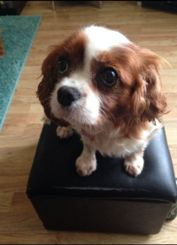 |
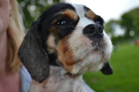
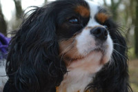 |
CharlieOn 27th June 2013, my life changed completely when CIN walked
into my house with the most traumatised wee boy ever,
I held him in my arms and he hid his head in the crook of my arm, afraid to
look at anything. He had been to hell and back, had spent his whole life in a puppy farm
but his life was about to change forever thanks to CIN.
They say time is a great healer and I'm hoping time will heal Charlie,
everyday is a new day for him, he is the most lovable wee boy ever, I was only fostering
him but he'll never be ready for a new home,
he's home now and I wouldn't change him for the world |
LadyOn the 2nd May 2014 a beautiful girl called Lady, a tri colour aged 3, came to us. Lady is from Enniskillen and
her owner was away most of the day so she was taken into the care of c.i.n. We were meant to be fostering her for a week while her other foster went on holiday,
but after 5 mins with her we knew she had to come and live with us permanently. Our other 3 cavaliers took to
her immediately and are now best of friends. We adore this beautiful girl and it feels like she has been here forever, she is so special and brings so much joy to our lives. |
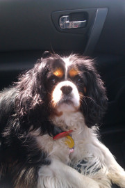 |
| 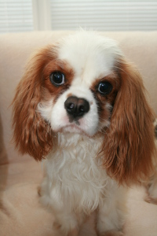 |
Love at first sight
Friday 15th November we met Cath on our way to the Pet Expo and with her was the most gorgeous pup I have ever seen. We went to say hello and I got a massive kiss. There and then we knew we wanted this boy but he was going to another family. I was very upset on the Monday as I thought of him going to his new family. So when I heard Cath’s voice saying there had been a change of plan and were we still interested I had to pull the car over as I just couldn’t drive through the happy tears.
Six months later and I wonder what life was ever like before Bailey. I am so thankful and indebted to Julie and her husband who got him out of his old life, where they thought it was reasonable to pull him by the back legs down the stairs, Diane and Joanne who then looked after him and to Cath for bringing Bailey back to Northern Ireland as he completes our family. He is the most loving, lively and goofiest dog I have met. He always comes when you ask for a kiss and has brought out the ‘pup’ in Louis, as he rarely played before. I just can’t imagine why anyone would want to get rid of this wonderful pup. He is a real character with bundles of energy and is in to absolutely everything and definitely keeps us on our toes! CIN has given him the chance to live life to the full and Bailey is making the most of it.
|
|